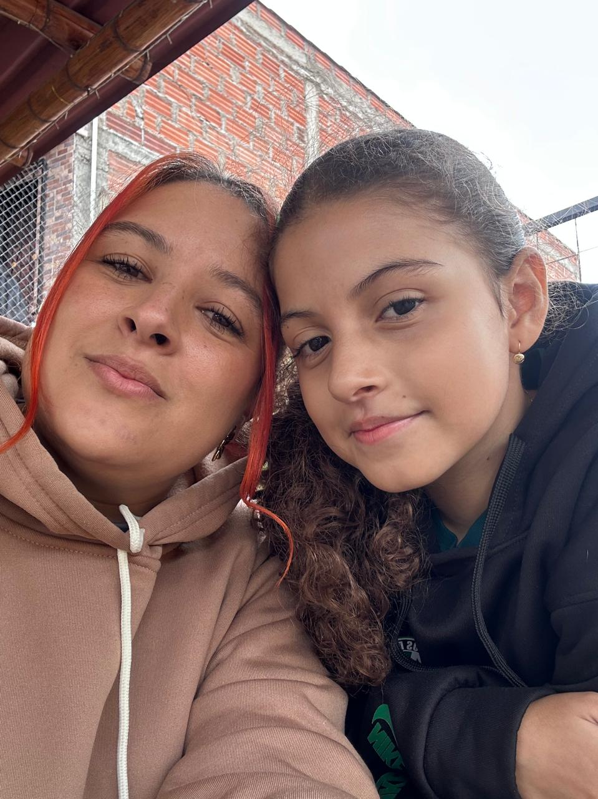

Seven posts about my family, my job, the things I like and the things I still want to learn.
TC
Tatiana Andrea Calderón Zea · Medellín, Colombia.
I study Administrative Development and Innovation Management at SENA (group 3466322). I started this blog for my English class, but I also use it to see how much I have improved since the first week.
Post 1 · October 6, 2026
About me and my family
familydaily routine

Home, Medellín.
Hi! My name is Tatiana and I live in Medellín. This is my first post, so I will start with the people I see every day.
I live with my daughter. She is eleven years old and she is in fifth grade, so in my house there is always homework on the table — hers and mine. She learns English at school too, and honestly she pronounces some words better than me. Sometimes we play a game: we choose five objects in the kitchen and we have to say them in English. If I make a mistake, she corrects me and she loves that part.
My days are quite full. I wake up early, I go to work, and in the evening I study. I am not going to say it is easy, because it isn't, but I like having a routine. On weekends I try to disconnect a little: we go out, we visit family, or we just stay at home and watch something together.
If I had to describe myself in three words, I would say organized, patient and stubborn. The last one sounds bad, but it is the reason I am still studying English after many years of saying "next year I will start".
I work as an administrative assistant at INDER Medellín, the public institute for sports and recreation in my city. People often think administrative work is just papers, and yes, there are a lot of papers. But there is also a lot of responsibility behind them.
My main tasks are receiving documents from people who want to sign a contract, checking that nothing is missing, uploading the contracts to SECOP, preparing the monthly payments and keeping our databases updated. I also review the supervision reports every month.
The hardest part is not the system. It is the deadlines. When a document arrives incomplete, I have to call the person, explain what is missing and wait. So I learned to check everything the same day it arrives, because a small mistake at the beginning becomes a big problem at the end of the month.
In my opinion, an employee in this area must be careful, honest and flexible. We can't lose a document, and we can't say "that is not my job" when a process is stuck. My goal is to use digital tools to make these processes faster, because I am sure many of them can be automated.
Listening · my own recordings
Audio 1 — Attitudes, beliefs and obligations at work
Audio 2 — My trajectory, my plans and how I solve problems
My favourite hobby is music. I listen to music while I cook, while I clean and while I work, and for the last months I have been choosing songs in English on purpose. First I listen, then I look for the lyrics, and then I try to sing. My pronunciation improves more with songs than with any grammar exercise.
I also like reading short news articles and watching series with subtitles in English. At the beginning I put the subtitles in Spanish, which was comfortable but useless. Now I leave them in English, and even if I don't understand everything, I understand the idea.
My plan is simple: fifteen minutes every day and ten new words every week. I use Duolingo, YouTube, the SENA platform and, I admit, Google Translate — although I try to use it to check and not to think for me. I write every new word in a notebook with an example sentence, because a word alone disappears from my head very fast.
What have I improved? Vocabulary and listening. What do I still need? Grammar, especially verb tenses, and speaking without preparing the sentence in my mind first. That is my next challenge.
If a friend from another country visited me, I would take them to Parque Arví. It is a big natural park in the mountains above Medellín, and the best part is how you get there: you take the metro, then the Metrocable, and in about forty minutes you go from the noise of the city to a forest.
I recommend going early. The weather up there is colder than in the city centre, so take a jacket, even if you leave your house with thirty degrees. There are walking trails, guided tours and a small market where you can buy food and handmade things. I always buy something to eat there.
One advice: check the official website before you go, because the trails and the opening hours can change. And please, don't leave rubbish. The park is beautiful because people take care of it.
I like showing this place to visitors because it changes the idea people have about Medellín. We are not only a city; we are a valley full of mountains, and from up there you can see all of it.
Post 5 · November 6, 2026
My goals and the news I follow
future planscurrent events
Planning the next year.
I am going to finish my program at SENA, and after that I want to keep studying something related to data and administrative innovation. In my job I see every day how much time we lose doing manually things that a system could do, and I would like to be the person who fixes that.
My other goal is more personal: I want to travel to Canada. I chose Canada because I have heard good things about it and because I want to be in a place where I have to speak English all the time. I know it will be uncomfortable at the beginning. That is exactly the point.
I also try to follow the news, especially about technology, education and the environment. I don't read everything, because there is too much, but I choose two or three topics and I follow them. When I read an article in English, I do three things: I look for the main idea, I check who published it, and I write down two or three words I didn't know.
Staying informed is not only about knowing what happens. It is also a good excuse to practise the language every day.
Every morning I open my phone and I already have ten messages with news, videos and "urgent" information. Some of it is true. A lot of it is not.
Critical thinking, for me, means stopping before reacting. Who wrote this? When? What do they want me to feel? Media literacy is the tool that helps me answer those questions, because today anybody can publish anything and make it look professional.
I will give a real example. A few months ago a message arrived in a family group chat about a public institution, and it sounded terrible. Before sharing it, I looked for the date — it was from two years before — and I searched the official page, where the information was completely different. I didn't share it. If I had shared it, I would have helped a lie travel a little further.
I think the most important skill is separating facts from opinions. A fact can be verified; an opinion cannot, and that is fine, but we should not mix them. In my job this is not optional: administrative decisions are based on documents, and if a document is false or incomplete, the decision will be wrong too.
So my rule is simple. Check the source, check the date, compare with another source, and only then share.
Post 7 · November 18, 2026
Crime and punishment
crimejusticeopinion
Protecting information is also prevention.
When we talk about crime we usually imagine theft or violence, but the crimes that worry me most today are the invisible ones: fraud, identity theft and cybercrime. They don't happen in a dark street. They happen in your email.
A few weeks ago a friend received a message that looked like it came from her bank. It had the logo, the colours, everything. They asked her to confirm her data "for security reasons". She almost did it. Luckily she called the bank first and it was false.
Laws must establish consequences, and I believe people who commit a crime should answer for it. But I also think punishment alone does not solve the problem. If a young person has no school, no job and no opportunities, the prison will be full and the cause will still be there. Prevention is cheaper and more humane than punishment.
In my opinion, a fair system should do three things: protect the victim, respect human rights even when the person is guilty, and offer a real possibility of coming back to society.
And at a personal level, we can also prevent. In my work I handle documents with personal data of many people, and protecting that information is part of my responsibility. Never share private data by message, verify who is asking, and when something feels strange, stop.